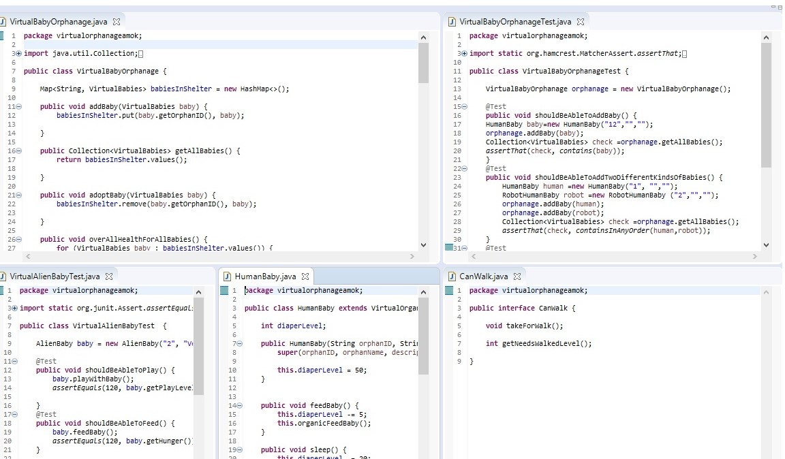

VirtualOrphanageAmok
Virtual Orphange Amok is a cleaver console application that allows the user to take care of a collection of babies in the Lonely Heart Orphange.
These are a few of the projects that I am working on. Please visit my GitHub for more! Click the image below to be redirected to my GitHub repository.
Virtual Orphange Amok is a cleaver console application that allows the user to take care of a collection of babies in the Lonely Heart Orphange.

This is a full stack website that give the user a list of reviews of local daycare facilities
This was my first project completed. Console application that tells the user their fortune based on the data they input.
A full stack developer with a background in directing trade schools for the past 16 years. A successful in leader that strives to inspire large groups of diverse people to work together and support a common goal. Thriving in agile team environments, with a desire to bring talents to a company with a culture that values creative problem solving, & supports outside the box thinkers.